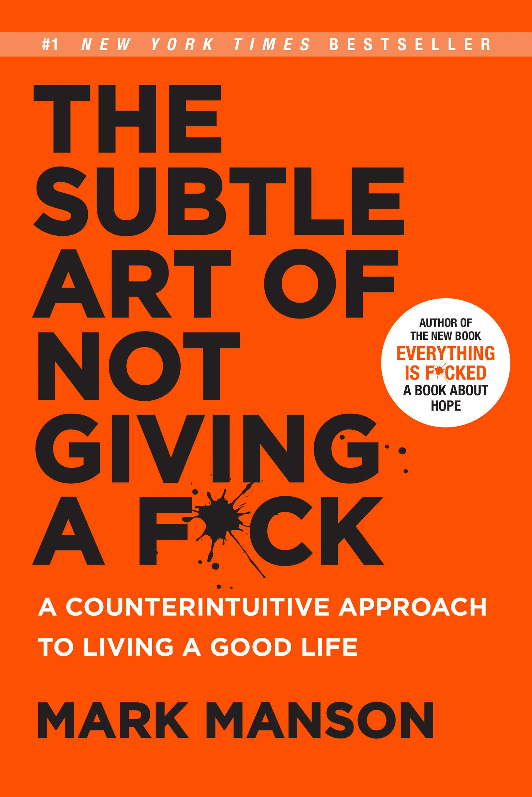

The Subtle Art of Not Giving a F*ck opens with the funeral of Charles Bukowski — an alcoholic, gambling, chronically unsuccessful writer for most of his life, whose gravestone reads simply "Don't Try." Mark Manson uses Bukowski's story to launch a deliberately contrarian argument: the self-help industry's core promise — that you can have anything, feel amazing all the time, and eliminate every negative emotion if you just try hard enough — is itself the problem. Wanting a better life all the time, he argues, is itself a subtly negative, exhausting experience, precisely because it fixates attention on everything currently lacking.
His alternative isn't nihilism or "not caring." It's what he calls the subtle art: since your emotional energy and time are finite, the only real choice you have is what to give a f*ck about — which struggles, which pain, which values are worth investing in — rather than pretending you can or should care about nothing, or everything, at once. Much of the book is spent dismantling comfortable illusions (that you're uniquely special, that certainty is safety, that freedom means keeping every option open) that quietly get in the way of making that choice well.
The tone is blunt, profane, and frequently funny by design — Manson's stated goal is to make genuinely old ideas (stoicism, Buddhist non-attachment, existentialism) land with people who'd never pick up a philosophy book, using memoir, dark humor, and a "no-bullsh*t" voice rather than academic rigor. The payoff is less a system to install and more an orientation to adopt: pain and struggle are unavoidable, so the entire game is choosing better ones.
The spiral most self-help accidentally creates by insisting every negative feeling must be fixed immediately.
You're not always at fault for your circumstances — but you're always responsible for how you interpret and respond to them.
Don't just sit there. Do something.
Who you are is defined by what you're willing to struggle for.
The desire for a more positive experience is itself a negative experience.
You are not special. You're actually pretty average.
If the book has one idea worth carrying forward above all others, it's that you were never in the market for a life without pain — only for the choice of which pain is worth having. The Backwards Law and the Feedback Loop from Hell both point at the same trap: fighting a feeling, or demanding that a feeling not exist, almost always produces more suffering than the feeling itself would have on its own.
This is what makes the Fault/Responsibility distinction and the Do Something Principle so durable as everyday tools — both bypass the paralysis of waiting for the "right" feeling or the "fair" circumstance, and instead point at the one lever that's always available: what you do next, and how you choose to interpret what already happened.
What keeps this from being just a clever reframe is the closing chapter on mortality: the whole argument only has urgency because your capacity to care about anything is finite. A hundred years from now, almost none of today's daily anxieties will matter — which is precisely why choosing a small number of them to care about, on purpose, is close to the entire task.
The Subtle Art of Not Giving a F*ck succeeds at exactly what it sets out to do: repackage old, well-tested ideas about acceptance, responsibility, and selective struggle in a voice sharp and funny enough that people who'd normally roll their eyes at "self-help" will actually finish it. Its best material — the Backwards Law, the Feedback Loop from Hell, the Fault/Responsibility split, the Do Something Principle — earns its popularity because each one is genuinely useful the first time you apply it, not just clever the first time you read it.
Its honest limitation is depth: this is a book of reframes and orientations, not a researched system with citations to lean on, and readers who want the rigor of Mindset or the operational precision of Getting Things Done will find this comparatively light. The profane, contrarian voice that makes the first half so propulsive also runs a little thin by the later chapters, where the same handful of moves get reapplied to new topics.
The practical recommendation: read it once for the reframes, then keep exactly two of them close at hand — the Fault/Responsibility distinction for whenever you're tempted toward blame or helplessness, and the Feedback Loop from Hell for whenever a bad feeling starts compounding into a worse one. The book's actual value isn't agreeing that "not everything deserves your energy." It's doing the audit — deciding, on purpose, what does.